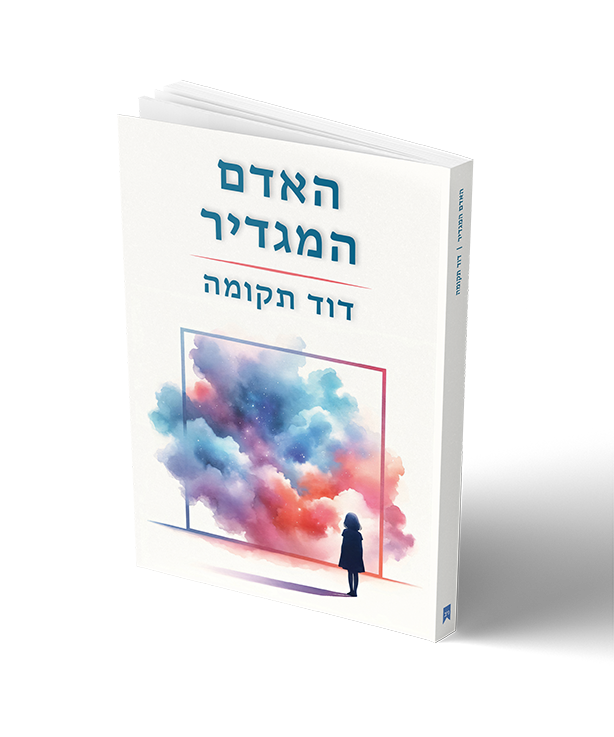

רכישת הספר - האדם המגדיר
לא נעים להשתנות.
עם זאת, אנשים משתנים בחייהם. הרי כולנו נולדים דומים – אמיצים אך כסילים, נלהבים אך מרושלים, סקרנים אך מוגבלים; פוחדים, ולכן משתנים.
אדם צובר בימיו מגננות, ומאבד מחיוניותו, עד כי לבסוף הוא משווע לשוב לחיים ככסיל מאושר.
אומר לה ולו כך – לא יהא זה מופלא אם תינתן לך היכולת לזהות את פחדיך, ומֵֵהם את תשתית מגננותיך, ואז להבין מדוע הם מיותרים?
בעיניי – זה שיכול לשמר את טוהר הילדות ואינו בור אלא בר דעת, מרוויח.
לכך נכתב ספר זה.
למימוש הנחה של 15%:
או בקרו באתר ספרי ניב:
האדם המגדיר - ספרי ניב
פרטים נוספים:
קטגוריות:
פילוסופיה, פסיכולוגיה
מטרה:
מטרת הספר להקנות לקוראים אוצר מילים חדש, על מנת להגדיר היטב רגשי מצוקה, ולהבינם באופן שיטתי וללא עזרה חיצונית. נלמד לזהות באופן תבניתי איך המצוקה קשורה לחוויות הילדות שלנו, ובסוף להבין מה היתה הטעות שלנו כל השנים, שהורינו חינכו אותו לעשות, ושמעולם לא חשבנו שאפשר אחרת.
מיקוד:
הספר מתמקד תחילה בבניית מודל תאורתי של תודעת האדם, תוך הקבלה לייצור חי, ומסיים בבניית שיטה פרקטית לזיהוי מצוקות והתמודדות עימן.
יישום:
את כלי הספר ניתן ליישם ברגעי משבר. בזמנים אחרים נתקשה לזהות את הדפוסים בהם הספר עוסק.
מבנה:
הספר בנוי מדיונים פילוסופיים, ומשתמש מדי פעם בסיפורים מוכרים, או חדשים, כדי להעביר מסר.